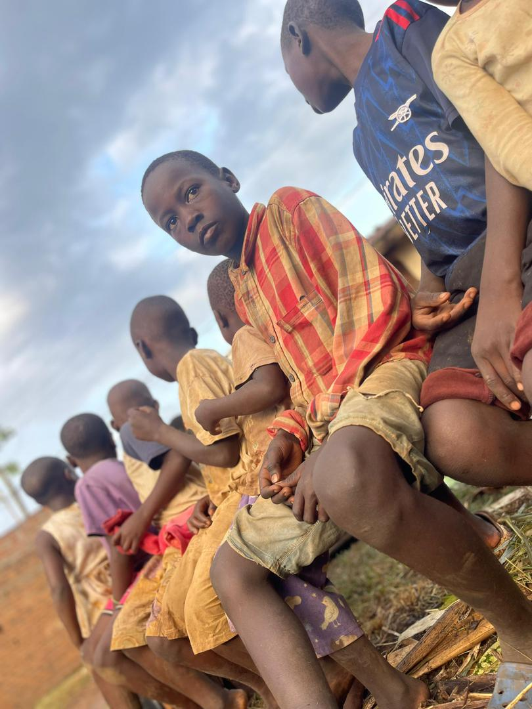

Support is more than a gift.
A meal, a school book, or a safe bed can change how a child sees tomorrow. That is the impact we work for every day.
We believe a charity should show what changed, who was helped, and how support moved a child from crisis toward stability.

A meal, a school book, or a safe bed can change how a child sees tomorrow. That is the impact we work for every day.
Share photos, testimonies, and simple reports after campaigns so donors can see progress and understand how help was used.